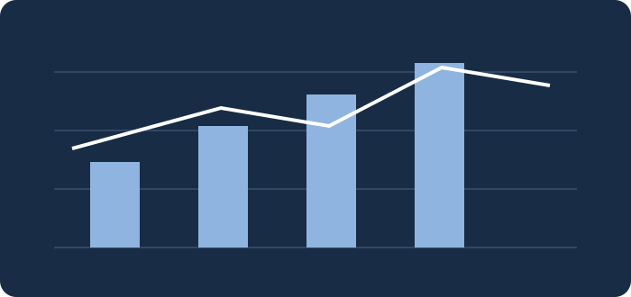

Cybersecurity market intelligence illustration; not a reproduction of confidential report pages.
The business question
In a fragmented, fast-moving cybersecurity market, investors and corporate decision-makers need a clear picture of acquisition activity, capital flows, and subsector momentum. This research examined how deal activity and market dynamics shaped the sector in the first half of 2026.
My contribution
As a Summer Research Associate at Momentum Cyber, I supported company and transaction research, market intelligence, database maintenance, and the preparation of professional reporting and investment banking materials. The broader report was a team deliverable; I do not claim sole authorship.
Approach & challenges
Research required comparing different cybersecurity segments, keeping transaction information organized, and translating detailed company-level information into concise insights. A key challenge was avoiding simplistic conclusions from deal counts alone when transaction sizes and disclosed values vary.
Insights & business value
The report explored cybersecurity M&A and financing activity, including the importance of Security Services in deal counts and Risk & Compliance in financing. The work helps market participants assess strategic interest, sector positioning, and evolving market themes.
Project artifacts
Publication permission required: The full report is not bundled here. Add an approved, publicly shareable copy as downloads/cybersecurity-mini-almanac-2026.pdf, then activate the link below.